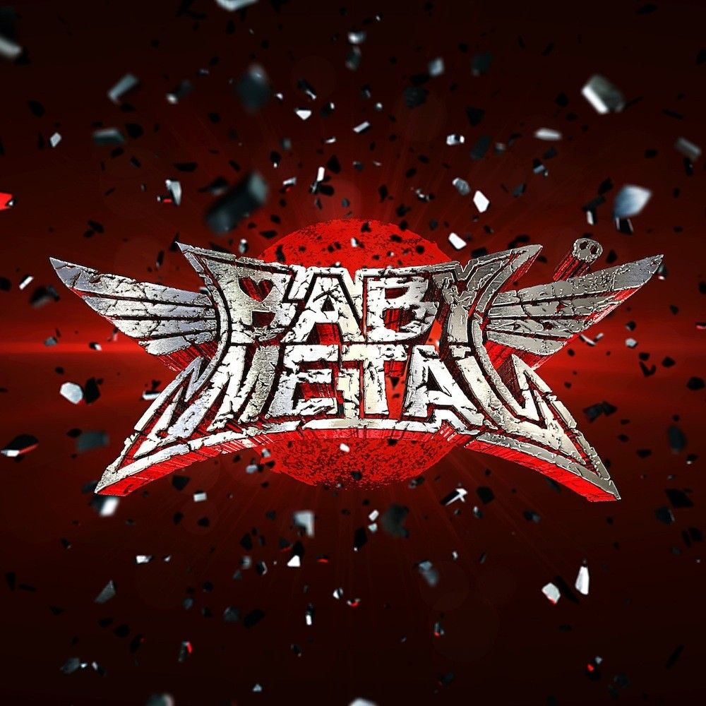
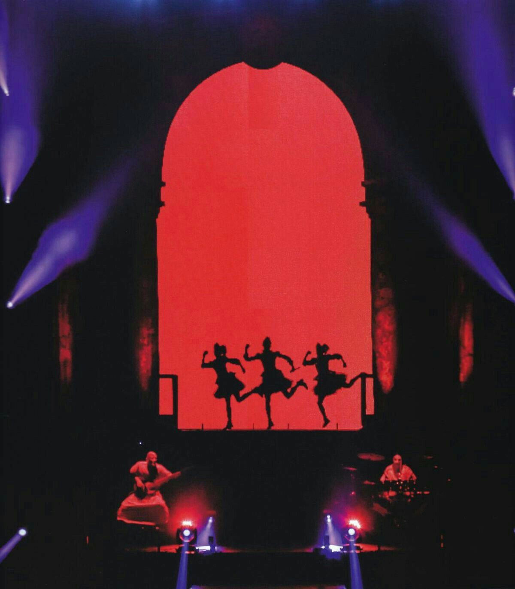
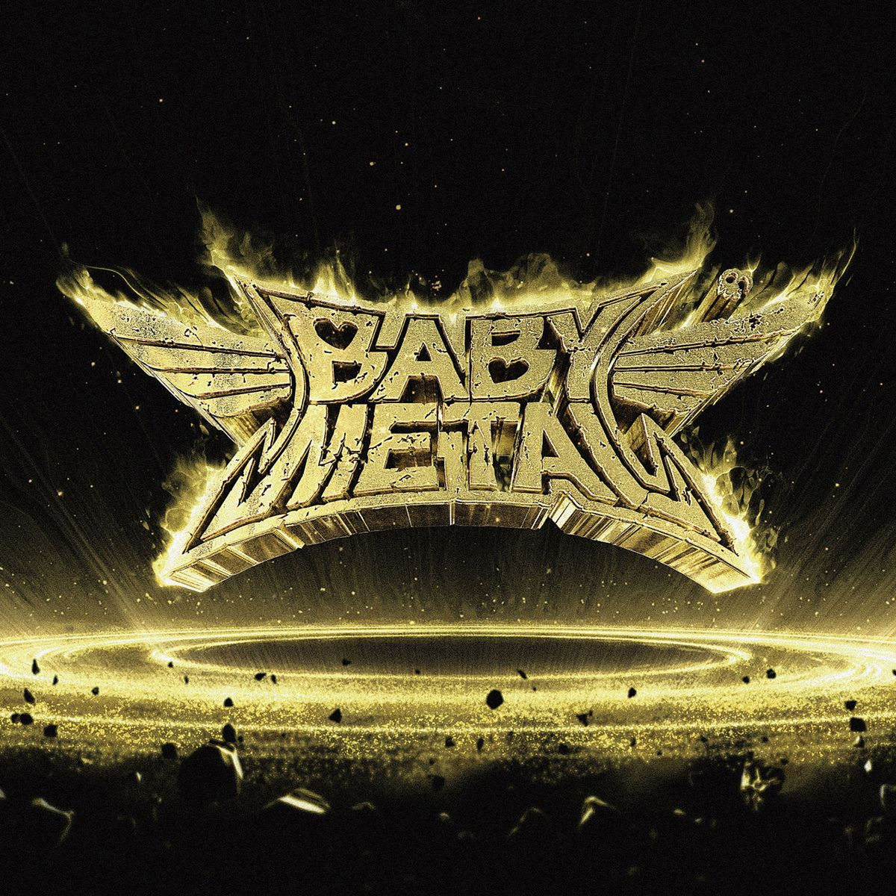
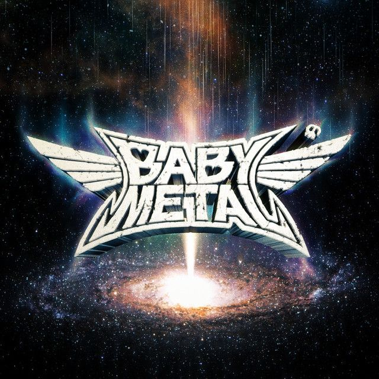
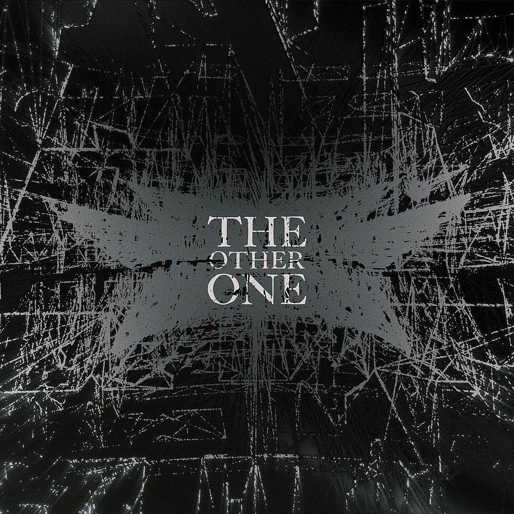
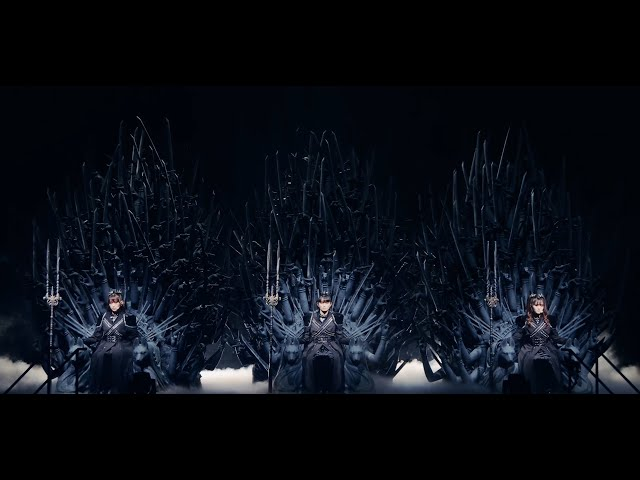
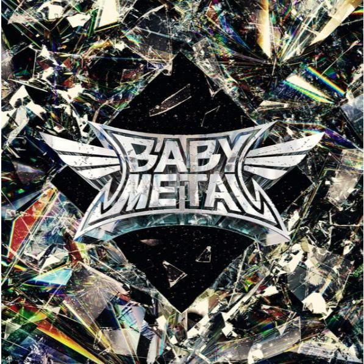
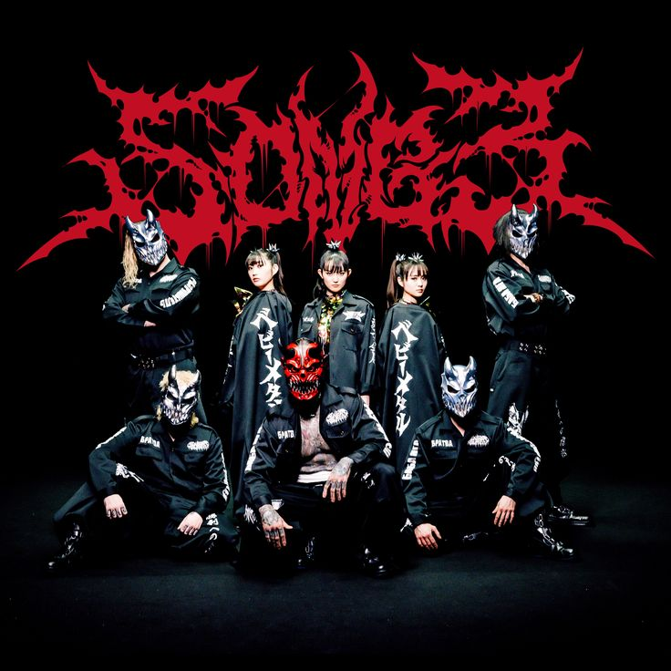
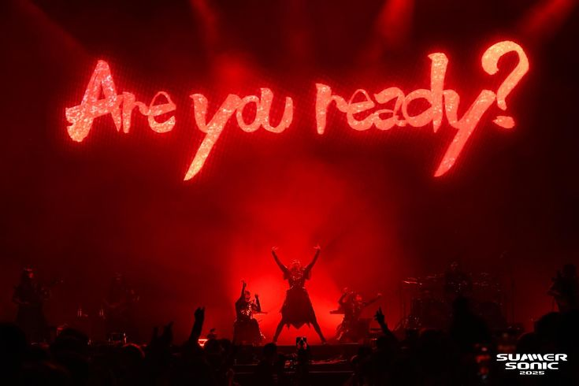

BABYMETAL — 2014
El álbum debut que presentó al mundo el kawaii metal. Reúne
«Doki Doki Morning», «Megitsune», «Headbanger» y «Gimme Chocolate!!».
Canciones conocidas
- Gimme Chocolate!!
- Megitsune
- Doki Doki Morning
- Headbanger!!
- Ijime, Dame, Zettai
- Road of Resistance

BABYMETAL (2014): el disco que abrió la puerta internacional.

Catch Me If You Can: coreografía en directo.
Metal Resistance — 2016
Segundo álbum, publicado el mismo año en que la banda encabezó
el Wembley Arena de Londres. Llegó al puesto 39 del Billboard 200.
- Karate
- The One
- Awadama Fever
- Meta Taro
- Amore
- Syncopation

Metal Resistance (2016): el salto a los grandes escenarios europeos.
Metal Galaxy — 2019
Álbum conceptual que recorre estilos de distintas partes del mundo,
siempre con base metalera. Alcanzó el puesto 13 del Billboard 200.
- PA PA YA!!
- Elevator Girl
- Distortion
- Shanti Shanti Shanti
- Starlight
- Da Da Dance
- Brand New Day

Metal Galaxy (2019): un viaje sonoro por géneros de todo el planeta.
The Other One — 2023
Disco conceptual grabado como dúo tras un año de pausa.
Cada canción representa un «mundo paralelo» de la banda.
- Divine Attack – Shingeki –
- Monochrome
- Metal Kingdom
- Light and Darkness
- Mirror Mirror
- Believing

The Other One (2023): el álbum más conceptual de su carrera.

Metal Kingdom, uno de los temas de «The Other One».
Metal Forth — 2025
Quinto álbum y primero con Capitol Records. Siete de sus diez
canciones son colaboraciones. Debutó en el puesto 9 del Billboard 200.
- RATATATA — con Electric Callboy
- from me to u — feat. Poppy
- Song 3 — con Slaughter to Prevail
- Kon! Kon! — feat. Bloodywood
- My Queen — feat. Spiritbox
- Sunset Kiss — feat. Polyphia
- METALI!! — feat. Tom Morello
- White Flame (白炎)
- KxAxWxAxIxI
- Algorism

Metal Forth (2025): el disco de las colaboraciones y del récord en Billboard.

Song 3: colaboración con Slaughter to Prevail.

Metali: BABYMETAL en el Summer Sonic 2025.
FOX_FEST y gira mundial 2026
FOX_FEST es el festival propio de la banda, estrenado en 2023.
En 2026 BABYMETAL emprendió «THE BIGGEST BABYMETAL TOUR EVER».